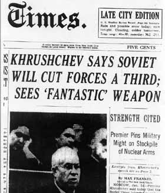
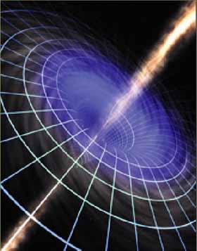

|
THE PAST Read how the future of
humanity has been hi-jacked
for more than 50 years by the weaponization of scalar electromagnetics and how
the Western scientific community has been blind-sided by
dogmatic adherence to 1867 electrical theory.
Weather engineering over California, USA, 2005
Photo: Tony Craddock
“North
America has not had 'normal' weather since 1976”
—Tom Bearden
“... In 1999, the Earth's first strategic
sub-space war was silently fought and won...”
Tom Bearden -
“Fer de Lance,” 2nd Edition, 2003
The only book that tells the true stories about why the
Space Shuttle
“Challenger”
and TWA flight 800 crashed
Published by Cheniere Press


New York Times, January 15th, 1960
Since 1963, the Russians have had the equivalent of more than seven additional
Manhattan Projects (using the Russian 5-year program instead of the 4-year
Manhattan Project), back-to-back, in development of energetics weaponry.
Western scientists refuse to accept it, and
cannot understand it, as scalar EM theory is not in their textbooks.

“Others [terrorists] are engaging even
in an eco-type of terrorism whereby they can alter the climate, set off
earthquakes, volcanoes remotely through the use of electromagnetic waves…
So there are plenty of ingenious minds out there that are at work finding
ways in which they can wreak terror upon other nations…It's real, and
that's the reason why we have to intensify our [counterterrorism] efforts.”
Secretary of Defense William Cohen at an
April 1997 counterterrorism conference sponsored by former Senator Sam
Nunn. Quoted from DoD News Briefing, Secretary of Defense William S.
Cohen, Q&A at the Conference on Terrorism, Weapons of Mass Destruction,
and U.S. Strategy, University of Georgia, Athens, Apr. 28, 1997.
|
“40% of the $10 trillion
U.S. economy is affected by weather and climate changes”
— Conrad C. Lautenbacher,
U.S. under secretary for Commerce
Wall Street Journal, 28 July, 2003
Wondrous medical benefits have been a casualty of the widespread failure to
teach higher symmetry EM theory
In thousands of animal experiments in France in the 1960s and
'70s, Antoine Prioré
used scalar electromagnetics to cure terminal cancers, infectious diseases, and
restore suppressed immune systems. Government funding was cancelled in 1974, and
the technology was suppressed.
|

December 2002: Tom Bearden places 20 years of research into the Public
Domain to stimulate redevelopment of scalar EM healing (the
“Porthole Process”).
Application of the
“Porthole Process”
can potentially cure cancer, AIDS, SARS, anthrax, or ANY cellular
affliction in 30-second treatment. Genetic diseases similarly
treatable.
Based on Prioré's
successful results, Process simply amplifies the body's natural
regenerative ability to heal itself.
A different embodiment of the Patent can also be used to
neutralize any form of radioactive waste in minutes.
Click here
|
Proceed
to Table of Contents
Proceed to Orders Page |